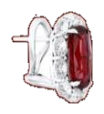
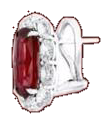
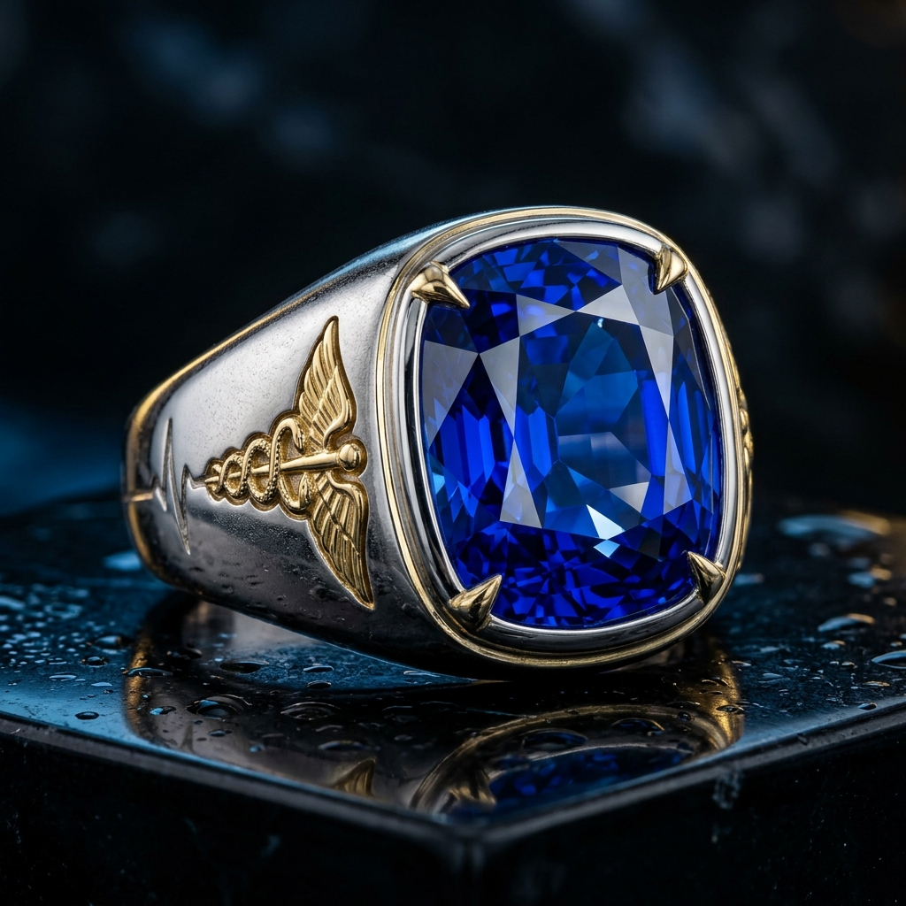
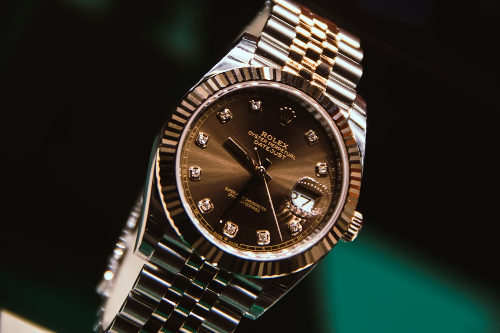
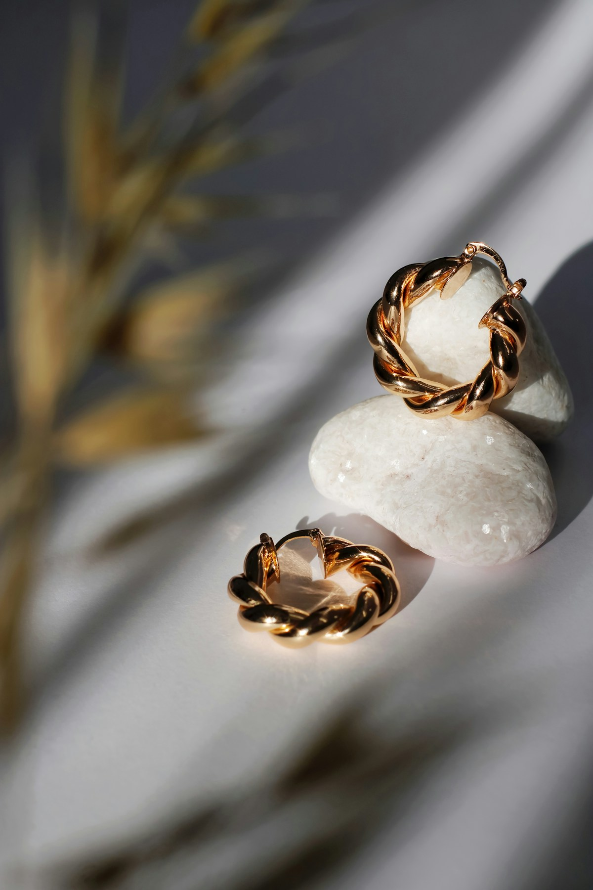
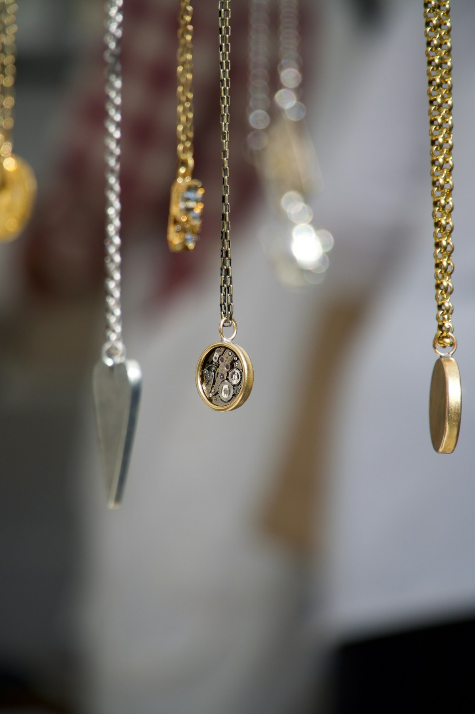

WHERE ANATOMY MEETS
timeless ARTISTRYTHE ANATOMICAL HAUTE JOAILLERIE • MAISON GENÈVE
The Arterial Ruby



Click piece to explore
The Cerebral Sapphire


Click piece to explore
The Physician Pearl


Click piece to explore